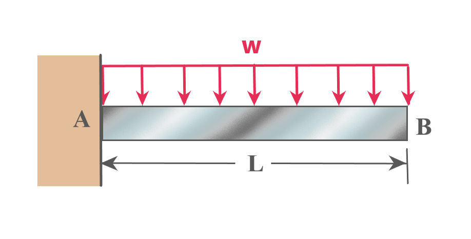

Step 4 Exercise 1

For the given diagram, which of the following is the expression for V as a function of x(distance from end A) ?
Note: The fixed end at A can exert forces along x and y directions as well as a balancing moment
Note: The fixed end at A can exert forces along x and y directions as well as a balancing moment